pacman::p_load(sf, spatstat, tmap, tidyverse)2nd Order Spatial Point Patterns Analysis Methods
Hands-on Exercise 2
1 Overview
This page continues from the Chapter 4 preparation and focuses on Choa Chu Kang and Tampines. I use G-, F-, K-, and L-functions to compare how childcare centre locations behave across distance.
2 The Data
The same two local GeoJSON datasets are used:
- Child Care Services as point features.
- Master Plan 2019 Subzone Boundary (No Sea) as polygon features.
The Chapter 5 analysis focuses on the Choa Chu Kang and Tampines planning areas, using the point pattern objects prepared in the same way as Chapter 4.
3 Installing and Loading the R Packages
set.seed(1234)4 Data Import and Preparation
NoteLocal implementation note
To keep this page reproducible on its own, I recreate the required sf, owin, and ppp objects from the local GeoJSON files.
mpsz_cl <- st_read("data/MasterPlan2019SubzoneBoundaryNoSeaGEOJSON.geojson",
quiet = TRUE) %>%
st_zm(drop = TRUE, what = "ZM") %>%
st_transform(crs = 3414) %>%
select(REGION_N, PLN_AREA_N, SUBZONE_N, SUBZONE_C, geometry) %>%
filter(SUBZONE_N != "SOUTHERN GROUP",
PLN_AREA_N != "WESTERN ISLANDS",
PLN_AREA_N != "NORTH-EASTERN ISLANDS")
childcare_sf <- st_read("data/ChildCareServices.geojson",
quiet = TRUE) %>%
st_zm(drop = TRUE, what = "ZM") %>%
st_transform(crs = 3414)
childcare_ppp <- as.ppp(childcare_sf)tm <- mpsz_cl %>%
filter(PLN_AREA_N == "TAMPINES")
ck <- mpsz_cl %>%
filter(PLN_AREA_N == "CHOA CHU KANG")
tm_owin = as.owin(tm)
ck_owin = as.owin(ck)
childcare_tm_ppp = childcare_ppp[tm_owin]
childcare_ck_ppp = childcare_ppp[ck_owin]par(mfrow=c(1,2))
plot(unmark(childcare_ck_ppp), main = "Choa Chu Kang")
plot(unmark(childcare_tm_ppp), main = "Tampines")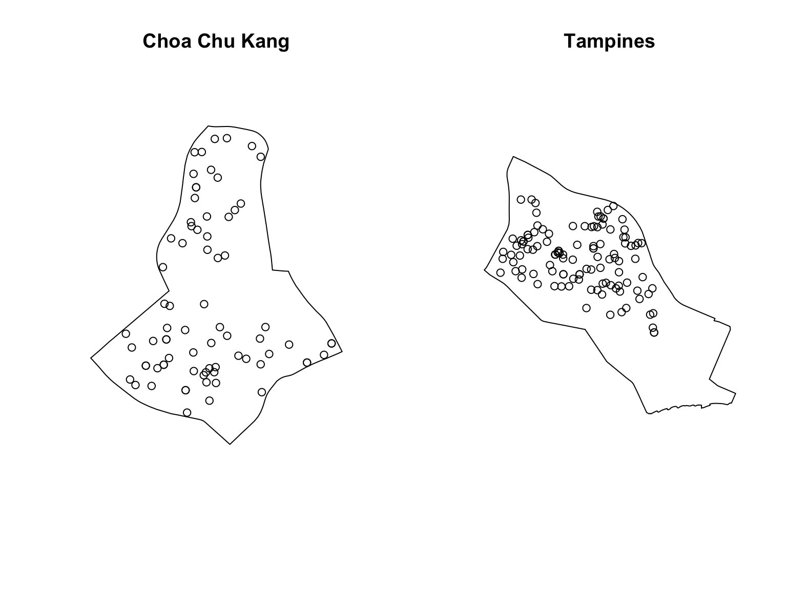
5 Second-order Spatial Point Patterns Analysis
The observed curve is compared with what complete spatial randomness would look like. When an observed line moves outside the simulation envelope, I read that as evidence that the pattern is behaving differently from CSR for that distance range.
6 Analysing Spatial Point Process Using G-Function
TipHow I read this plot
The G-function is event-to-event. I read it as a nearest-neighbour view: if the observed curve rises faster than the CSR expectation, many events have close neighbours.
6.1 Choa Chu Kang Planning Area
6.1.1 Computing G-function Estimation
G_CK = Gest(childcare_ck_ppp, correction = "border")
plot(G_CK, xlim=c(0,500))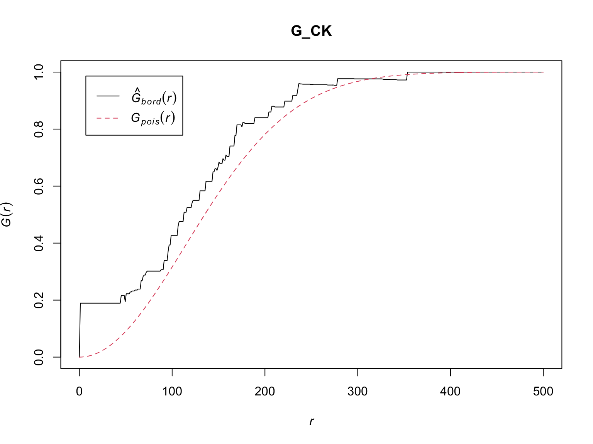
6.1.2 Performing Complete Spatial Randomness Test
G_CK.csr <- envelope(childcare_ck_ppp, Gest, nsim = 999)Generating 999 simulated realisations of CSR ...
1, 2, 3, ......10.........20.........30.........40.........50.........60..
.......70.........80.........90.........100.........110.........120.........130
.........140.........150.........160.........170.........180.........190........
.200.........210.........220.........230.........240.........250.........260......
...270.........280.........290.........300.........310.........320.........330....
.....340.........350.........360.........370.........380.........390.........400..
.......410.........420.........430.........440.........450.........460.........470
.........480.........490.........500.........510.........520.........530........
.540.........550.........560.........570.........580.........590.........600......
...610.........620.........630.........640.........650.........660.........670....
.....680.........690.........700.........710.........720.........730.........740..
.......750.........760.........770.........780.........790.........800.........810
.........820.........830.........840.........850.........860.........870........
.880.........890.........900.........910.........920.........930.........940......
...950.........960.........970.........980.........990........
999.
Done.plot(G_CK.csr)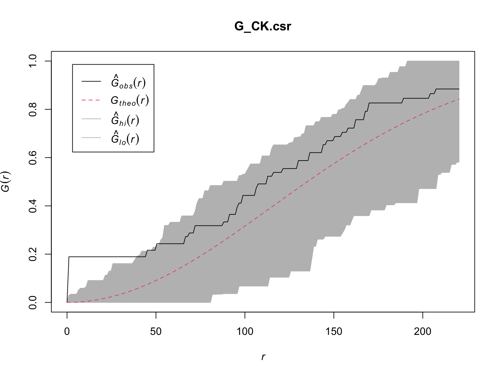
6.2 Tampines Planning Area
6.2.1 Computing G-function Estimation
G_tm = Gest(childcare_tm_ppp, correction = "best")
plot(G_tm)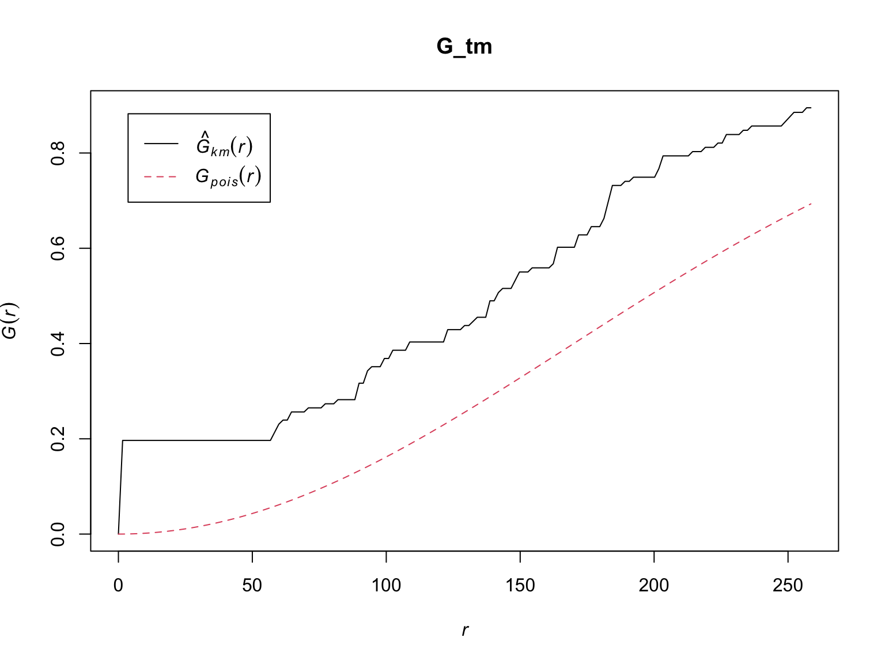
6.2.2 Performing Complete Spatial Randomness Test
G_tm.csr <- envelope(childcare_tm_ppp, Gest, correction = "all", nsim = 999)Generating 999 simulated realisations of CSR ...
1, 2, 3, ......10.........20.........30.........40.........50.........60..
.......70.........80.........90.........100.........110.........120.........130
.........140.........150.........160.........170.........180.........190........
.200.........210.........220.........230.........240.........250.........260......
...270.........280.........290.........300.........310.........320.........330....
.....340.........350.........360.........370.........380.........390.........400..
.......410.........420.........430.........440.........450.........460.........470
.........480.........490.........500.........510.........520.........530........
.540.........550.........560.........570.........580.........590.........600......
...610.........620.........630.........640.........650.........660.........670....
.....680.........690.........700.........710.........720.........730.........740..
.......750.........760.........770.........780.........790.........800.........810
.........820.........830.........840.........850.........860.........870........
.880.........890.........900.........910.........920.........930.........940......
...950.........960.........970.........980.........990........
999.
Done.plot(G_tm.csr)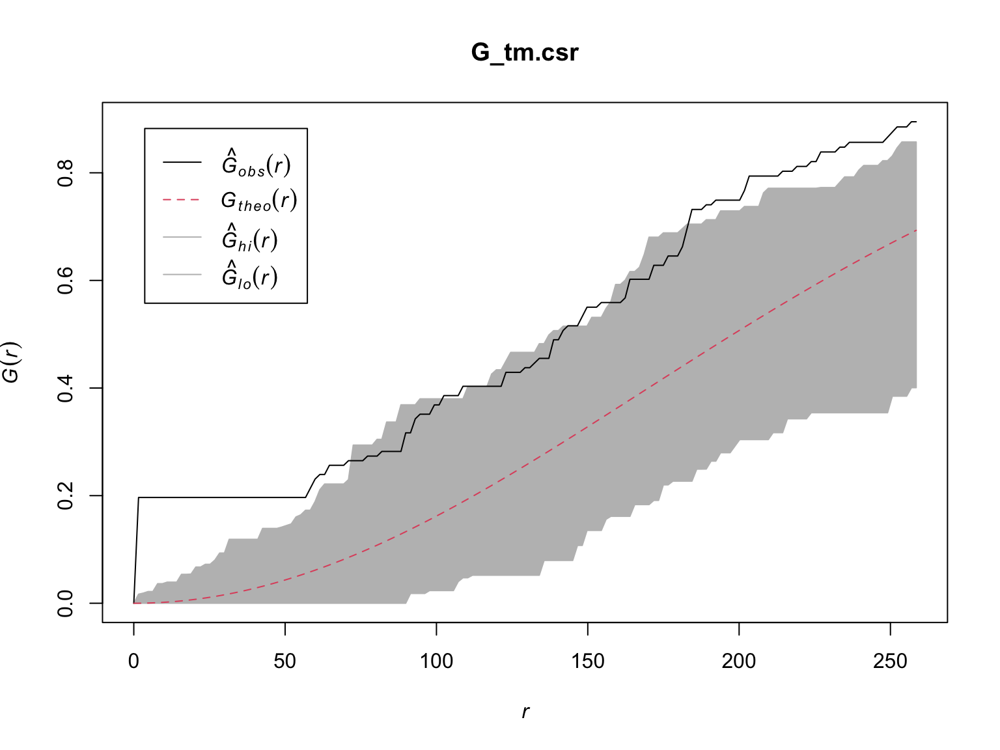
7 Analysing Spatial Point Process Using F-Function
TipHow I read this plot
The F-function is location-to-event. Instead of starting from an existing childcare centre, it starts from arbitrary locations in the study area and asks how far those locations are from the nearest centre.
7.1 Choa Chu Kang Planning Area
7.1.1 Computing F-function Estimation
F_CK = Fest(childcare_ck_ppp)
plot(F_CK)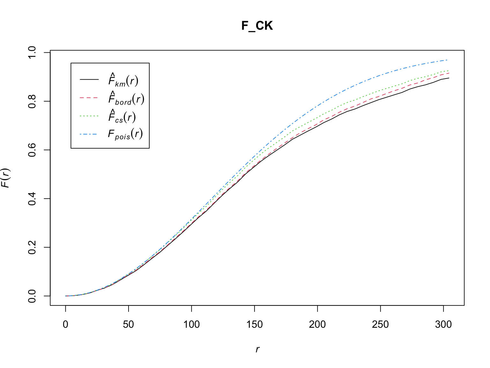
7.2 Performing Complete Spatial Randomness Test
F_CK.csr <- envelope(childcare_ck_ppp, Fest, nsim = 999)Generating 999 simulated realisations of CSR ...
1, 2, 3, ......10.........20.........30.........40.........50.........60..
.......70.........80.........90.........100.........110.........120.........130
.........140.........150.........160.........170.........180.........190........
.200.........210.........220.........230.........240.........250.........260......
...270.........280.........290.........300.........310.........320.........330....
.....340.........350.........360.........370.........380.........390.........400..
.......410.........420.........430.........440.........450.........460.........470
.........480.........490.........500.........510.........520.........530........
.540.........550.........560.........570.........580.........590.........600......
...610.........620.........630.........640.........650.........660.........670....
.....680.........690.........700.........710.........720.........730.........740..
.......750.........760.........770.........780.........790.........800.........810
.........820.........830.........840.........850.........860.........870........
.880.........890.........900.........910.........920.........930.........940......
...950.........960.........970.........980.........990........
999.
Done.plot(F_CK.csr)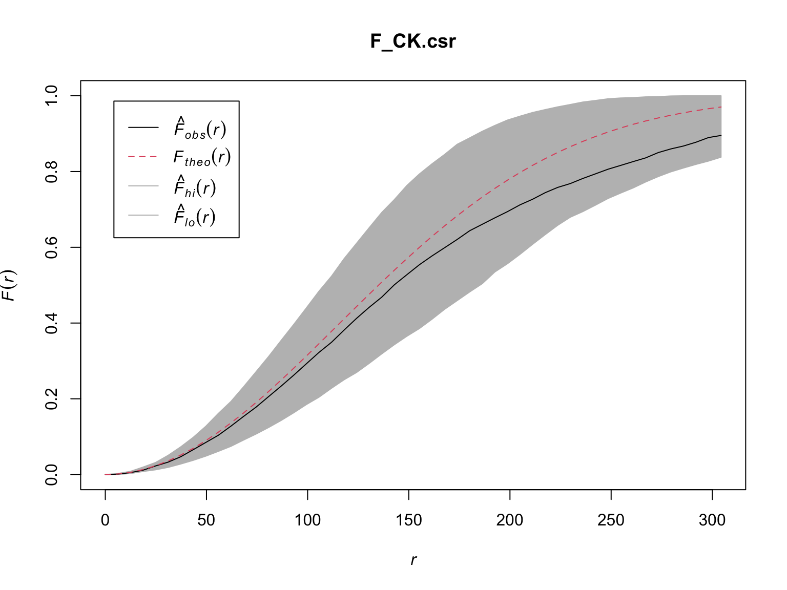
7.3 Tampines Planning Area
7.3.1 Computing F-function Estimation
F_tm = Fest(childcare_tm_ppp, correction = "best")
plot(F_tm)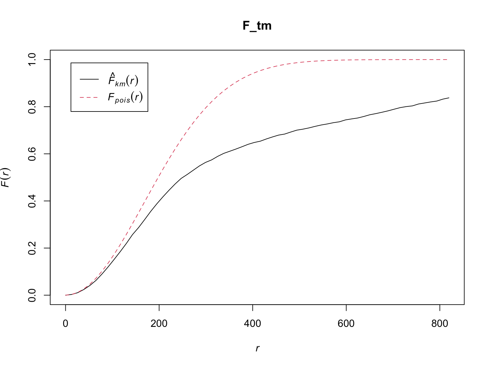
7.3.2 Performing Complete Spatial Randomness Test
F_tm.csr <- envelope(childcare_tm_ppp, Fest, correction = "all", nsim = 999)Generating 999 simulated realisations of CSR ...
1, 2, 3, ......10.........20.........30.........40.........50.........60..
.......70.........80.........90.........100.........110.........120.........130
.........140.........150.........160.........170.........180.........190........
.200.........210.........220.........230.........240.........250.........260......
...270.........280.........290.........300.........310.........320.........330....
.....340.........350.........360.........370.........380.........390.........400..
.......410.........420.........430.........440.........450.........460.........470
.........480.........490.........500.........510.........520.........530........
.540.........550.........560.........570.........580.........590.........600......
...610.........620.........630.........640.........650.........660.........670....
.....680.........690.........700.........710.........720.........730.........740..
.......750.........760.........770.........780.........790.........800.........810
.........820.........830.........840.........850.........860.........870........
.880.........890.........900.........910.........920.........930.........940......
...950.........960.........970.........980.........990........
999.
Done.plot(F_tm.csr)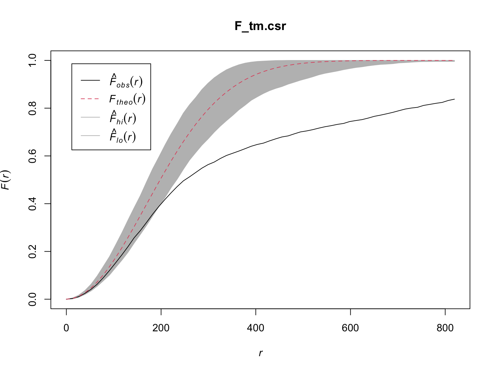
8 Analysing Spatial Point Process Using K-Function
TipHow I read this plot
The K-function is more multi-scale. It counts neighbours within increasing distance bands, so it is useful when clustering may happen at some distances but not others.
8.1 Choa Chu Kang Planning Area
8.1.1 Computing K-fucntion Estimate
K_ck = Kest(childcare_ck_ppp, correction = "Ripley")
plot(K_ck, . -r ~ r, ylab= "K(d)-r", xlab = "d(m)")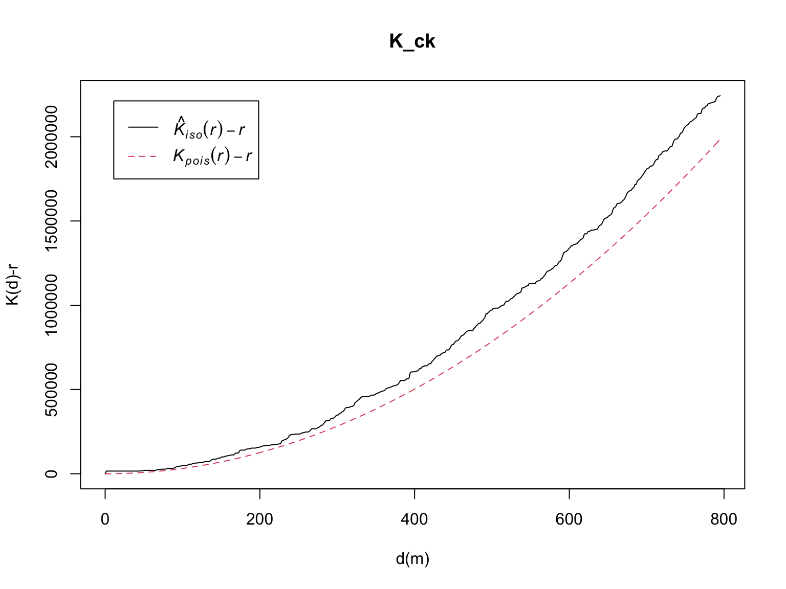
8.1.2 Performing Complete Spatial Randomness Test
K_ck.csr <- envelope(childcare_ck_ppp, Kest, nsim = 99, rank = 1, glocal=TRUE)Generating 99 simulated realisations of CSR ...
1, 2, 3, 4, 5, 6, 7, 8, 9, 10, 11, 12, 13, 14, 15, 16, 17, 18, 19, 20,
21, 22, 23, 24, 25, 26, 27, 28, 29, 30, 31, 32, 33, 34, 35, 36, 37, 38, 39, 40,
41, 42, 43, 44, 45, 46, 47, 48, 49, 50, 51, 52, 53, 54, 55, 56, 57, 58, 59, 60,
61, 62, 63, 64, 65, 66, 67, 68, 69, 70, 71, 72, 73, 74, 75, 76, 77, 78, 79, 80,
81, 82, 83, 84, 85, 86, 87, 88, 89, 90, 91, 92, 93, 94, 95, 96, 97, 98,
99.
Done.plot(K_ck.csr, . - r ~ r, xlab="d", ylab="K(d)-r")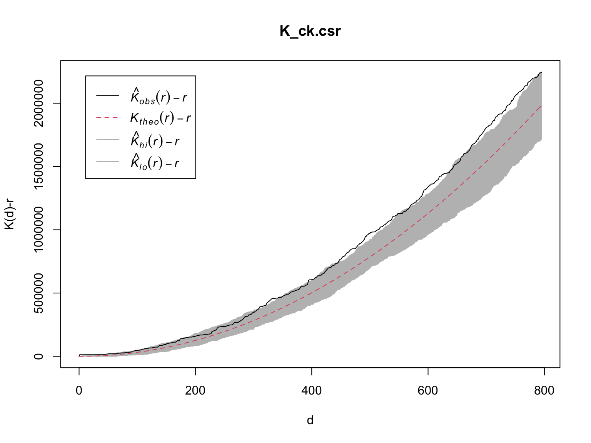
8.2 Tampines Planning Area
8.2.1 Computing K-fucntion Estimation
K_tm = Kest(childcare_tm_ppp, correction = "Ripley")
plot(K_tm, . -r ~ r,
ylab= "K(d)-r", xlab = "d(m)",
xlim=c(0,1000))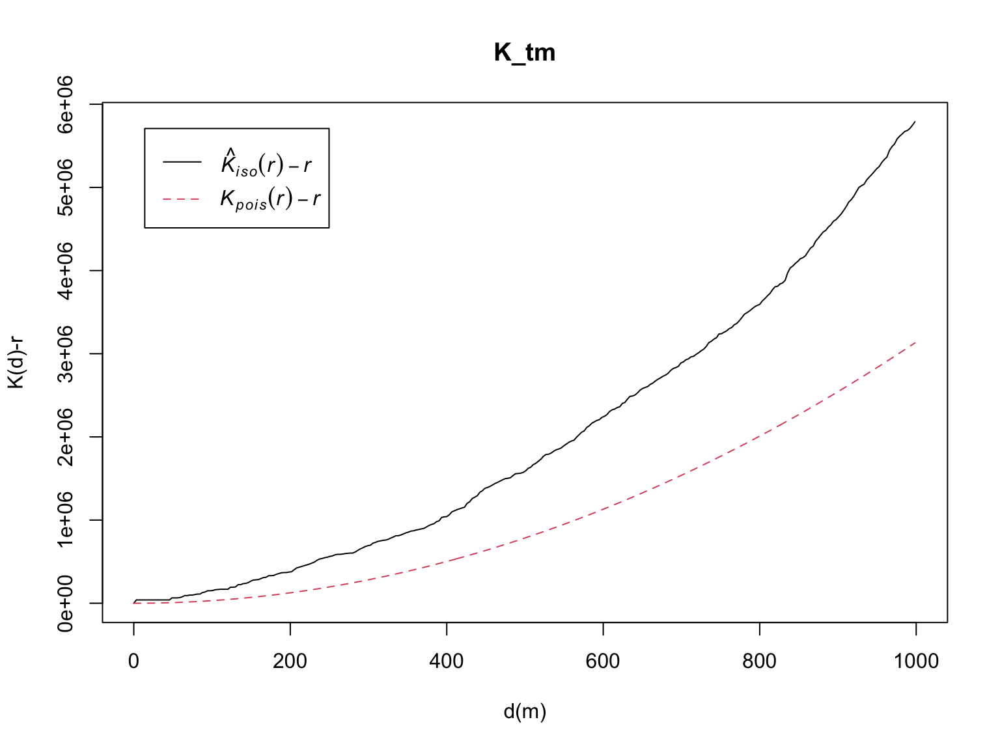
8.2.2 Performing Complete Spatial Randomness Test
K_tm.csr <- envelope(childcare_tm_ppp, Kest, nsim = 99, rank = 1, glocal=TRUE)Generating 99 simulated realisations of CSR ...
1, 2, 3, 4, 5, 6, 7, 8, 9, 10, 11, 12, 13, 14, 15, 16, 17, 18, 19, 20,
21, 22, 23, 24, 25, 26, 27, 28, 29, 30, 31, 32, 33, 34, 35, 36, 37, 38, 39, 40,
41, 42, 43, 44, 45, 46, 47, 48, 49, 50, 51, 52, 53, 54, 55, 56, 57, 58, 59, 60,
61, 62, 63, 64, 65, 66, 67, 68, 69, 70, 71, 72, 73, 74, 75, 76, 77, 78, 79, 80,
81, 82, 83, 84, 85, 86, 87, 88, 89, 90, 91, 92, 93, 94, 95, 96, 97, 98,
99.
Done.plot(K_tm.csr, . - r ~ r,
xlab="d", ylab="K(d)-r", xlim=c(0,500))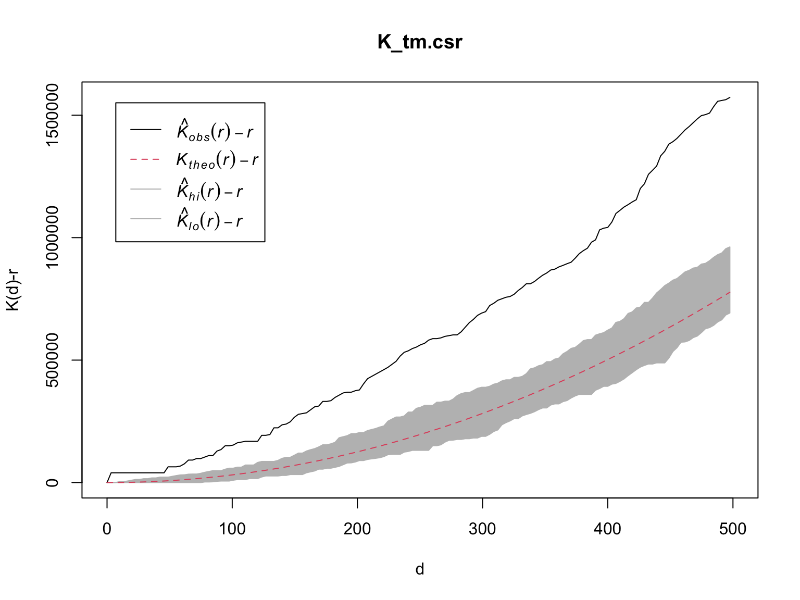
9 Analysing Spatial Point Process Using L-Function
TipHow I read this plot
The L-function is a transformed version of K. I find it easier to read because the CSR reference is closer to a flat zero line after plotting L(d)-r.
9.1 Choa Chu Kang Planning Area
9.1.1 Computing L Fucntion Estimation
L_ck = Lest(childcare_ck_ppp, correction = "Ripley")
plot(L_ck, . -r ~ r,
ylab= "L(d)-r", xlab = "d(m)")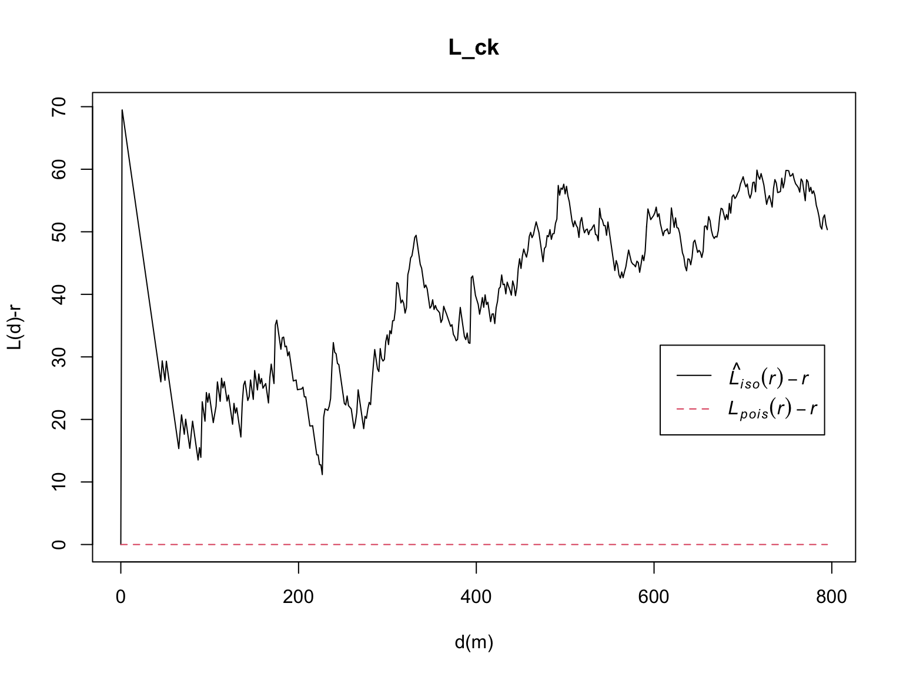
9.1.2 Performing Complete Spatial Randomness Test
L_ck.csr <- envelope(childcare_ck_ppp, Lest, nsim = 99, rank = 1, glocal=TRUE)Generating 99 simulated realisations of CSR ...
1, 2, 3, 4, 5, 6, 7, 8, 9, 10, 11, 12, 13, 14, 15, 16, 17, 18, 19, 20,
21, 22, 23, 24, 25, 26, 27, 28, 29, 30, 31, 32, 33, 34, 35, 36, 37, 38, 39, 40,
41, 42, 43, 44, 45, 46, 47, 48, 49, 50, 51, 52, 53, 54, 55, 56, 57, 58, 59, 60,
61, 62, 63, 64, 65, 66, 67, 68, 69, 70, 71, 72, 73, 74, 75, 76, 77, 78, 79, 80,
81, 82, 83, 84, 85, 86, 87, 88, 89, 90, 91, 92, 93, 94, 95, 96, 97, 98,
99.
Done.plot(L_ck.csr, . - r ~ r, xlab="d", ylab="L(d)-r")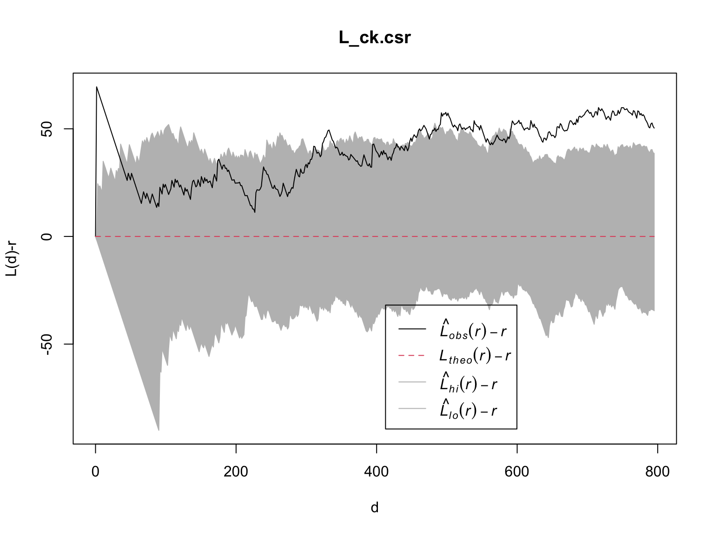
9.2 Tampines Planning Area
9.2.1 Computing L-fucntion Estimate
L_tm = Lest(childcare_tm_ppp, correction = "Ripley")
plot(L_tm, . -r ~ r,
ylab= "L(d)-r", xlab = "d(m)",
xlim=c(0,1000))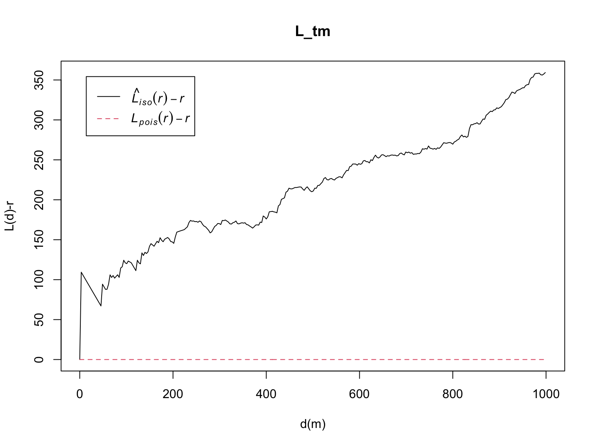
9.2.2 Performing Complete Spatial Randomness Test
L_tm.csr <- envelope(childcare_tm_ppp, Lest, nsim = 99, rank = 1, glocal=TRUE)Generating 99 simulated realisations of CSR ...
1, 2, 3, 4, 5, 6, 7, 8, 9, 10, 11, 12, 13, 14, 15, 16, 17, 18, 19, 20,
21, 22, 23, 24, 25, 26, 27, 28, 29, 30, 31, 32, 33, 34, 35, 36, 37, 38, 39, 40,
41, 42, 43, 44, 45, 46, 47, 48, 49, 50, 51, 52, 53, 54, 55, 56, 57, 58, 59, 60,
61, 62, 63, 64, 65, 66, 67, 68, 69, 70, 71, 72, 73, 74, 75, 76, 77, 78, 79, 80,
81, 82, 83, 84, 85, 86, 87, 88, 89, 90, 91, 92, 93, 94, 95, 96, 97, 98,
99.
Done.plot(L_tm.csr, . - r ~ r,
xlab="d", ylab="L(d)-r", xlim=c(0,500))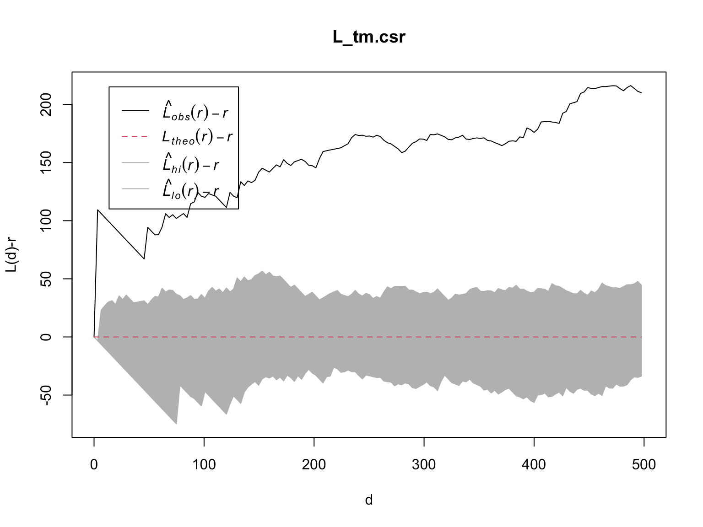
10 G, F, K and L: How I Distinguish Them
| Function | What it focuses on | Intuition |
|---|---|---|
| G | event-to-event | nearest neighbour |
| F | arbitrary location-to-event | empty space |
| K | neighbours across distance | multi-scale clustering |
| L | transformed K | easier interpretation |
11 My Interpretation
Across these plots, I read the observed curves relative to the CSR line and simulation envelope rather than from the curve alone. When a curve sits outside the envelope, it suggests that the childcare centre pattern in that planning area is not behaving like CSR at that distance range. The G and F functions help me think about nearest events and empty space, while K and L give a broader distance-based view.
12 What I Learned
- First-order and second-order methods answer different questions: intensity versus interaction.
- Simulation envelopes make the plots more useful because they give a practical CSR comparison.
- The same planning area can look different depending on whether I use G, F, K, or L.
- The interpretation should be tied to distance ranges, not just one overall statement.
13 Limitations
CSR is a simple benchmark, and it does not account for population distribution, residential land use, transport access, or planning policy. The result is useful for describing spatial pattern, but not enough by itself to explain the causes of that pattern.
14 References
- R for Geospatial Data Science and Analytics. Chapter 5: 2nd Order Spatial Point Patterns Analysis Methods. https://r4gdsa.netlify.app/chap05